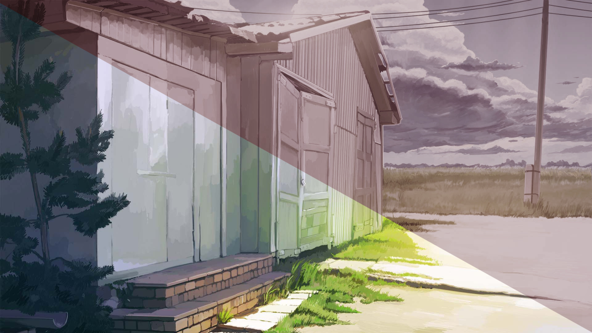

7 дней лета, билд 0.21с (отход от канона)
Страница 3 из 7 •  1, 2, 3, 4, 5, 6, 7
1, 2, 3, 4, 5, 6, 7
Стоит ли альтернативный первый день усилий по интеграции?
Re: 7 дней лета, билд 0.21с (отход от канона)
автор peregarrett в Вс 9 Авг 2015 - 15:43
Впрочем, если заход через него будет открываться после прохода через все руты, тогда все упрощается. В этом случае однозначно за.

peregarrett- Находка для шпиона

- Сообщения : 3264
Дата регистрации : 2014-09-07
Возраст : 36
Re: 7 дней лета, билд 0.21с (отход от канона)
автор Chess в Вс 9 Авг 2015 - 18:01
Тогда нужен Семён пораскованней, да и остальные тоже. Вон, пусть с кошочки пример берут - она вообще в открытую по лагерю мобилы отжимает.Впрочем, если заход через него будет открываться после прохода через все руты, тогда все упрощается.

Chess- Находка для шпиона
- Сообщения : 3798
Дата регистрации : 2014-10-05
Откуда : Город на краю света
Re: 7 дней лета, билд 0.21с (отход от канона)
автор XOLODOS в Вс 9 Авг 2015 - 18:31

XOLODOS- Сыч

- Сообщения : 66
Дата регистрации : 2015-07-31
Возраст : 24
Откуда : Россия, Смоленская обл. г.Починок
Re: 7 дней лета, билд 0.21с (отход от канона)
автор 7dl-kun в Вс 9 Авг 2015 - 18:33

7dl-kun- Находка для шпиона
- Сообщения : 3026
Дата регистрации : 2014-09-07
Откуда : здесь столько наркоманов?
Re: 7 дней лета, билд 0.21с (отход от канона)
автор peregarrett в Вс 9 Авг 2015 - 18:44
peregarrett- Находка для шпиона
- Сообщения : 3264
Дата регистрации : 2014-09-07
Возраст : 36
Re: 7 дней лета, билд 0.21с (отход от канона)
автор 7dl-kun в Вс 9 Авг 2015 - 18:52
А мне нравится. Даже кое-какая стори в голове имеется, которую я попробую опосредованно, через ссылки в пионерко-рутах, рассказать.
7dl-kun- Находка для шпиона
- Сообщения : 3026
Дата регистрации : 2014-09-07
Откуда : здесь столько наркоманов?
Re: 7 дней лета, билд 0.21с (отход от канона)
автор peregarrett в Вс 9 Авг 2015 - 19:56
peregarrett- Находка для шпиона
- Сообщения : 3264
Дата регистрации : 2014-09-07
Возраст : 36
Re: 7 дней лета, билд 0.21с (отход от канона)
автор Blackwood в Вс 9 Авг 2015 - 21:19
- Брат ( Наутилус Помпилиус - зверь ) :
Последний раз редактировалось: Blackwood (Вс 9 Авг 2015 - 23:49), всего редактировалось 2 раз(а)

Blackwood- Сыч
- Сообщения : 47
Дата регистрации : 2015-06-16
Re: 7 дней лета, билд 0.21с (отход от канона)
автор openplace в Вс 9 Авг 2015 - 22:50
- Спойлер:
- если в alt_day1_alt_S не пытаться особо сблизиться со Славей (+)
Последний раз редактировалось: openplace (Вс 9 Авг 2015 - 23:03), всего редактировалось 2 раз(а) (Обоснование : УТОЧНЕНИЕ)

openplace- Хикка

- Сообщения : 111
Дата регистрации : 2015-05-02
Re: 7 дней лета, билд 0.21с (отход от канона)
автор Arlien в Вс 9 Авг 2015 - 22:51
Энивей, который час?
- Час кукуритика!:
Хотя критикой тут и не пахнет - все по объективной части я сдал в первый заход, дальше только отзывы и рацпредложения.
В общем и целом день для меня пропитан каким-то флером легкой ООСности всего и вся. Выкающая Мика, бегающая Лена, странные варианты выборов у Семена... Такое вот впечатление.
Инженерная часть явно упрощена по сравнению со стандартом. Хорошо на предмет не-пложения отсылок, плохо для непосредственно прохождения - мультивариантность для него очень приятна, но критической просадки нет - реакций достаточно.
По конкретике - начну с хорошего.
Обливашки с Алисой хороши, понравились больше стандартного ивента.
Непонятна реакция Семена. Его сходу кормят офигенными шуточками, а он лезет ручкаться? Ладно еще дрыщ. Энтот самый буржуйско-стокгольмский синдром, все дела. Но остальные? "Ахаха, как классно ты мне подгадила, го дружить"?
Хз, в рамках "старого знакомства" могло бы быть понятно, но если знакомство "старое", почему Сема изначально повелся на эту детскую разводку?..
Может, туды третий вариант реакции запилить? Мол, иди-ка ты? И быренька джамп на альт_С?
Потом - Мика. Ну, определенно заслужила местечко в первом дне. Ивенты необычные, и это приятно.
Но надо еще немного позанудствовать про ивент с мячиком. Во-первых, метод приема изменился (найс мув!), а артефакты остались - название выборов по-прежнему про пинание, да и не собьет даже мелкую Улю с ног подачей от головы.
Во-вторых - вообще! Где законный и самый реалистичный выбор - "А? Что?.." Два из трех Семенов вообще-то особой реакцией не отличаются, плюс скрамбл нервных реакций от самочувствия.
Потом Улька в столовой. Ренегадский выбор меня смутил, чесгря. Может, его в сослагательное наклонение? А то я прочитал в святой уверенности, что кто-то реально получил тарелку на голову. А впрочем нет, скорей это я невнимательночтец.
Еще - ограбление столовой. Дрищ, допустим, при виде плаксивой физии теряет волю. Но остальные? Так вот прямиком из своей страшной-ужасной житухи в лагерь и сразу же, в тот же день уже на котейкины глазки ведутся? Ну я даже не знаю.
ИМХО нужна возможность джампа где-то от 2600 на серединку "К черту".
Ну и самое неприятное для меня в новом дне - письмо. Хз, мне лично тупо руинит настроение. "Попытайся близиться с кем-нибудь", блин. Попаданец-осеменитель на партийном задании. Да и общая стилистика Мистера Свободного... Неприятная фигня. Не к месту кмк.
Arlien- Людовед

- Сообщения : 1322
Дата регистрации : 2014-09-08
Re: 7 дней лета, билд 0.21с (отход от канона)
автор 7dl-kun в Вс 9 Авг 2015 - 23:11
А пока работаю, товарищи кодеры, программисты и просто заинтересованные и немного понимающие личности! У меня просьба или вопрос, не знаю даже. Ввиду того, что мне попросту не хватает компетенции по данной части, хочу попросить у вас помощи.
Вкратце, ТЗ следующее: необходима реализация функции десатурации, возможно, частичного тинта картинки подобного тому, что мы видим здесь (насыщенность -0.5, тинт 0.95, 0.2, 0.2, яроксть -0.2) - но без необходимости обращаться к каждой картинке отдельно или красить каждую картинку отдельно.
- Искомый результат наверху:

Мне нужны картинки подобного плана для Нуар-рута, и, в принципе, я могу реализовать этот момент, но для этого придётся прописывать отдельную im.matrix для каждого отдельно взятого изображения. Не то, чтобы меня это пугало, но не хотелось бы забивать микроскопом гвозди, если вдруг есть возможность своего рода скрипта или фабрики тинта, и и вы знаете о ней - дайте знать, пожалуйста, буду безмерно вам благодарен. В случае же, если ренпуй/питон таких глупостей не позволяет - что ж, будем тогда по старинке, ручками (=
7dl-kun- Находка для шпиона
- Сообщения : 3026
Дата регистрации : 2014-09-07
Откуда : здесь столько наркоманов?
Re: 7 дней лета, билд 0.21с (отход от канона)
автор peregarrett в Вс 9 Авг 2015 - 23:49
Функция lb__recolor пробегает по ВСЕМ изображениям, зарегистрированным в игре, и применяет к ним указанную трансформацию.
Наверное, если на входе в нуар-рут вызвать эту функцию, получим нужный эффект.
peregarrett- Находка для шпиона
- Сообщения : 3264
Дата регистрации : 2014-09-07
Возраст : 36
Re: 7 дней лета, билд 0.21с (отход от канона)
автор 7dl-kun в Вс 9 Авг 2015 - 23:51
Я всё поняль. То есть, либо все в реколоре, либо ни одна, избирательного способа нет?
7dl-kun- Находка для шпиона
- Сообщения : 3026
Дата регистрации : 2014-09-07
Откуда : здесь столько наркоманов?
Re: 7 дней лета, билд 0.21с (отход от канона)
автор peregarrett в Вс 9 Авг 2015 - 23:57
- Код:
for id, img in renpy.display.image.images.iteritems()
peregarrett- Находка для шпиона
- Сообщения : 3264
Дата регистрации : 2014-09-07
Возраст : 36
Re: 7 дней лета, билд 0.21с (отход от канона)
автор peregarrett в Пн 10 Авг 2015 - 1:14
RenPy doc пишет:
renpy.image(name, d)
This function may only be run from inside an init block. It is an error to run this function once the game has started.
Надо что-то изобретать.
peregarrett- Находка для шпиона
- Сообщения : 3264
Дата регистрации : 2014-09-07
Возраст : 36
Re: 7 дней лета, билд 0.21с (отход от канона)
автор Arlien в Пн 10 Авг 2015 - 1:42
Arlien- Людовед
- Сообщения : 1322
Дата регистрации : 2014-09-08
Re: 7 дней лета, билд 0.21с (отход от канона)
автор 7dl-kun в Пн 10 Авг 2015 - 2:05
Нечто в духе
scene %картинка%:
%оператор, вызывающий нужные свойства картинки%
7dl-kun- Находка для шпиона
- Сообщения : 3026
Дата регистрации : 2014-09-07
Откуда : здесь столько наркоманов?
Re: 7 дней лета, билд 0.21с (отход от канона)
автор Ленофаг Простой в Пн 10 Авг 2015 - 5:28
альт день 1
479 - elif (herc)[loki]:
480 - extend "[пробел]да партитур"
482 - extend "[пробел]да планшета"

Ленофаг Простой- Сыч
- Сообщения : 86
Дата регистрации : 2015-03-09
Возраст : 21
Re: 7 дней лета, билд 0.21с (отход от канона)
автор peregarrett в Пн 10 Авг 2015 - 9:47
7dl-kun пишет:Это ещё хлеще, чем каждой картинке im.matrix пририсовывать, так как создаёт к тому же ещё и физическую копию. Нет, должен быть способ изящнее. Во всяком случае, я на это надеюсь.
Нечто в духе
scene %картинка%:
%оператор, вызывающий нужные свойства картинки%
А, если оператор прописывать руками, тогда можно в ините сделать копии фонов через аналогичную функцию, и писать вот так:
- Код:
scene bg ext_shed_day nuar
Я-то ломаю голову, чтобы все картинки поменялись, оставшись под теми же именами.
peregarrett- Находка для шпиона
- Сообщения : 3264
Дата регистрации : 2014-09-07
Возраст : 36
Re: 7 дней лета, билд 0.21с (отход от канона)
автор 7dl-kun в Пн 10 Авг 2015 - 10:03
7dl-kun- Находка для шпиона
- Сообщения : 3026
Дата регистрации : 2014-09-07
Откуда : здесь столько наркоманов?
Re: 7 дней лета, билд 0.21с (отход от канона)
автор peregarrett в Пн 10 Авг 2015 - 10:16
peregarrett- Находка для шпиона
- Сообщения : 3264
Дата регистрации : 2014-09-07
Возраст : 36
Re: 7 дней лета, билд 0.21с (отход от канона)
автор BlackDoomer в Пн 10 Авг 2015 - 11:49

BlackDoomer- Хикка
- Сообщения : 165
Дата регистрации : 2015-07-31
Откуда : СПб
Re: 7 дней лета, билд 0.21с (отход от канона)
автор 7dl-kun в Пн 10 Авг 2015 - 12:14
7dl-kun- Находка для шпиона
- Сообщения : 3026
Дата регистрации : 2014-09-07
Откуда : здесь столько наркоманов?
Re: 7 дней лета, билд 0.21с (отход от канона)
автор haLf0nzio в Пн 10 Авг 2015 - 13:02
7dl-kun пишет:Судя по недоверчивым репликам, самим никогда тазик шваброй подпирать не приходилось? (=
да дело не в "самим не", а в том что 28+ дядя вася, который Семён стал вдруг 16-летним лошарой (хотя память то принём, профессор), при том что это выглядит канонично токмо у дрища например имхо тащемта, ибо он у нас у вас козлищще опущения на все случаи жизни =)

haLf0nzio- Хикка
- Сообщения : 161
Дата регистрации : 2015-04-28
Возраст : 27
Откуда : Санкт-Петербург
Re: 7 дней лета, билд 0.21с (отход от канона)
автор 7dl-kun в Пн 10 Авг 2015 - 13:08
7dl-kun- Находка для шпиона
- Сообщения : 3026
Дата регистрации : 2014-09-07
Откуда : здесь столько наркоманов?
Страница 3 из 7 • 1, 2, 3, 4, 5, 6, 7